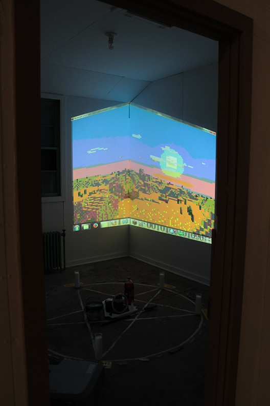
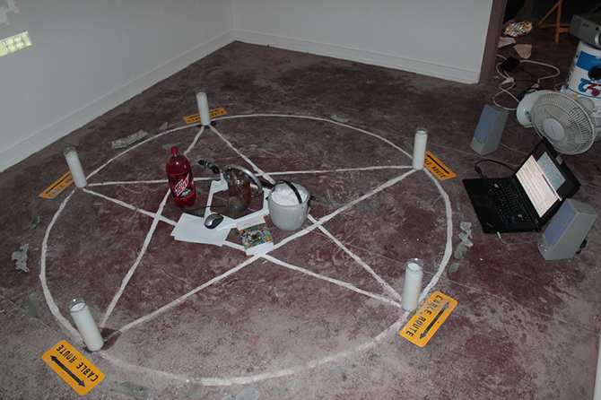
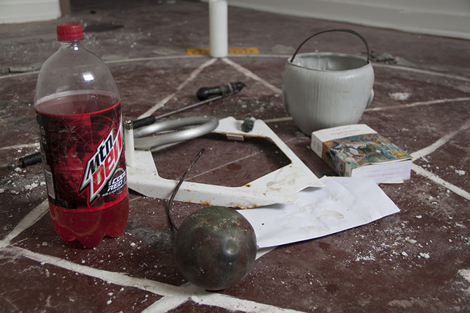
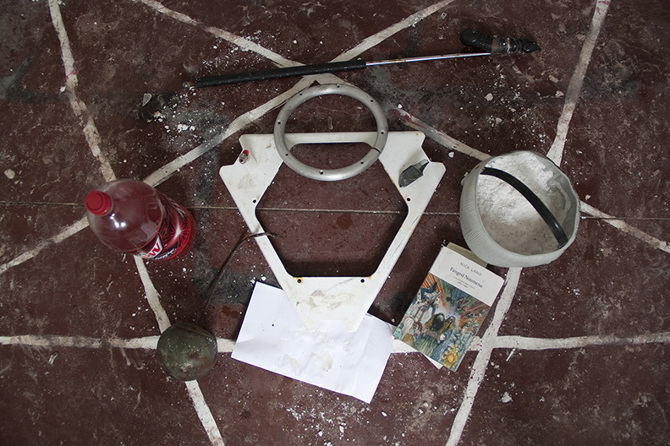
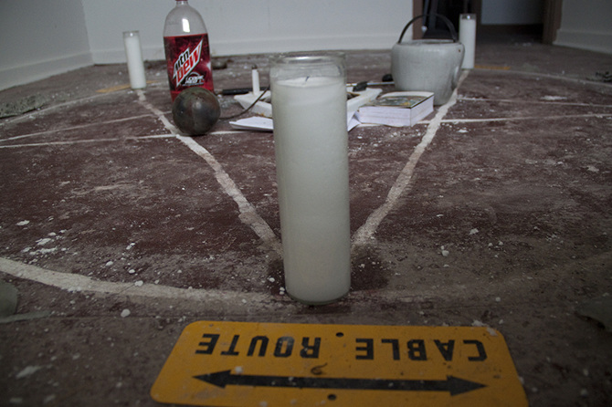
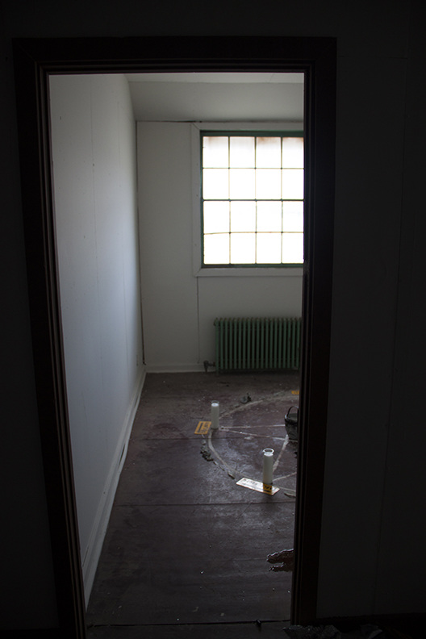
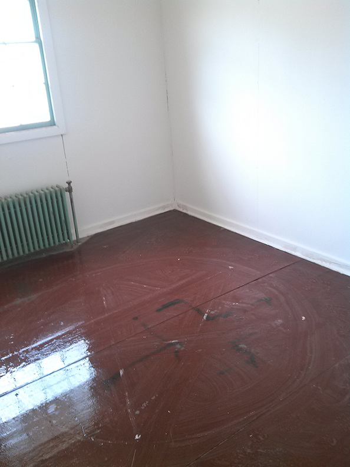

Ray Trace
!
Figment light spills from a point: a subjectivity.
Point and Vector
Pooling, it wraps the hypothetical objects it encounters. The projection upon the thing
is not a predestination, but a simulation of the possible anchored in the circumstances
of the present. An expression of the tendential. Like the metaphor of moonlight on a
lake, the watcher is layers of gossamer virtuality removed from things real, but not
actual.
.--. --- .. -. - / .- -. -.. / ...- . -.-. - --- .-.
!
Ray Trace is a loosely connected body of work begun while on residency at the Center for Land Use Interpretation in Wendover, Utah. It seeks futurity in an unexpected place, and investigates the ways in which information technology attempts to reach beyond traditional landscapes but invariably inscribes itself upon them. Ray Trace is video▲, text and image, and spellwork▼.






